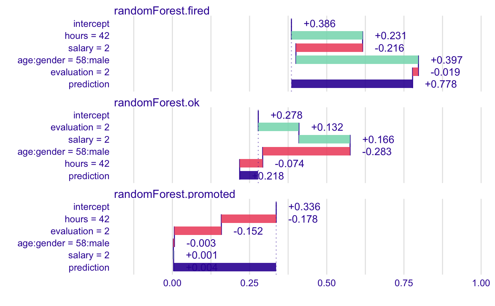
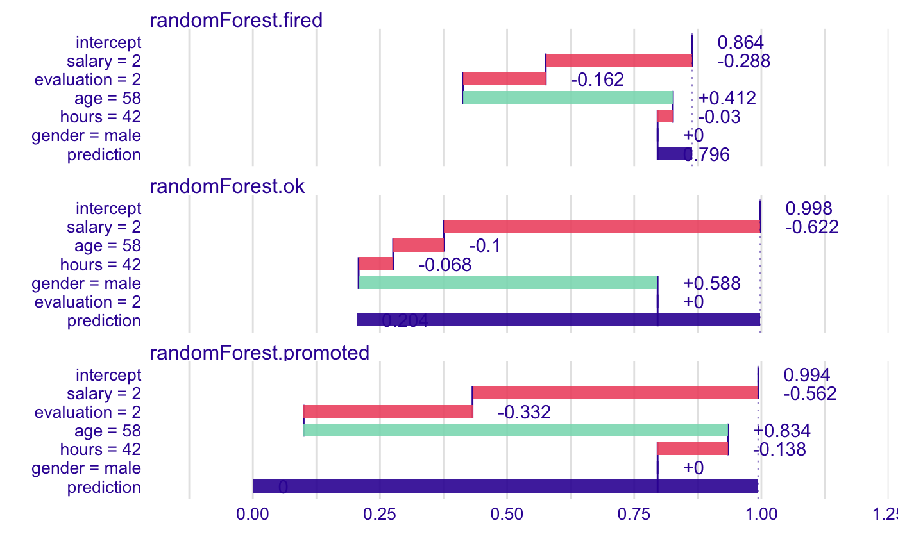
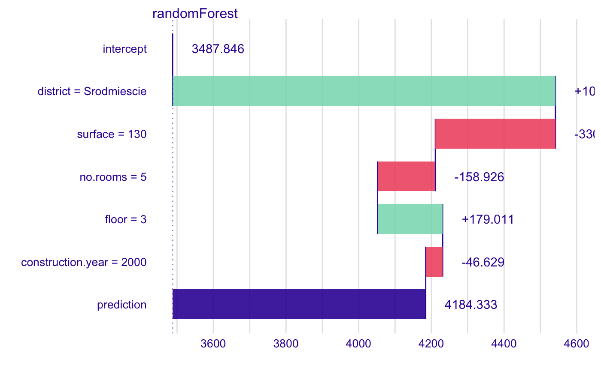
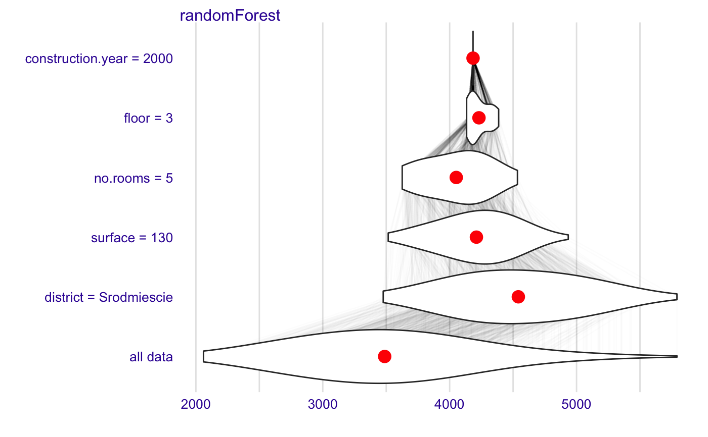

<!-- Generated by pkgdown: do not edit by hand -->
<!DOCTYPE html>
<html>
  <head>
  <meta charset="utf-8">
<meta http-equiv="X-UA-Compatible" content="IE=edge">
<meta name="viewport" content="width=device-width, initial-scale=1.0">

<title>Model Agnostic Sequential Variable Attributions with Interactions — local_interactions • iBreakDown</title>

<!-- jquery -->
<script src="https://code.jquery.com/jquery-3.1.0.min.js" integrity="sha384-nrOSfDHtoPMzJHjVTdCopGqIqeYETSXhZDFyniQ8ZHcVy08QesyHcnOUpMpqnmWq" crossorigin="anonymous"></script>
<!-- Bootstrap -->

<link href="https://maxcdn.bootstrapcdn.com/bootstrap/3.3.7/css/bootstrap.min.css" rel="stylesheet" integrity="sha384-BVYiiSIFeK1dGmJRAkycuHAHRg32OmUcww7on3RYdg4Va+PmSTsz/K68vbdEjh4u" crossorigin="anonymous">
<script src="https://maxcdn.bootstrapcdn.com/bootstrap/3.3.7/js/bootstrap.min.js" integrity="sha384-Tc5IQib027qvyjSMfHjOMaLkfuWVxZxUPnCJA7l2mCWNIpG9mGCD8wGNIcPD7Txa" crossorigin="anonymous"></script>

<!-- Font Awesome icons -->
<link href="https://maxcdn.bootstrapcdn.com/font-awesome/4.6.3/css/font-awesome.min.css" rel="stylesheet" integrity="sha384-T8Gy5hrqNKT+hzMclPo118YTQO6cYprQmhrYwIiQ/3axmI1hQomh7Ud2hPOy8SP1" crossorigin="anonymous">


<!-- pkgdown -->
<link href="../pkgdown.css" rel="stylesheet">
<script src="../jquery.sticky-kit.min.js"></script>
<script src="../pkgdown.js"></script>
<!-- mathjax -->
<script src='https://mathjax.rstudio.com/latest/MathJax.js?config=TeX-AMS-MML_HTMLorMML'></script>

<!--[if lt IE 9]>
<script src="https://oss.maxcdn.com/html5shiv/3.7.3/html5shiv.min.js"></script>
<script src="https://oss.maxcdn.com/respond/1.4.2/respond.min.js"></script>
<![endif]-->

<!-- Google analytics -->
<script async src="https://www.googletagmanager.com/gtag/js?id=UA-5650686-14"></script>
<script>
  window.dataLayer = window.dataLayer || [];
  function gtag(){dataLayer.push(arguments);}
  gtag('js', new Date());

  gtag('config', 'UA-5650686-14');
</script>

  </head>

  <body>
    <div class="container template-reference-topic">
      <header>
      <div class="navbar navbar-default navbar-fixed-top navbar-mi2" role="navigation">
  <div class="container">
    <div class="navbar-header">
      <button type="button" class="navbar-toggle collapsed" data-toggle="collapse" data-target="#navbar">
        <span class="icon-bar"></span>
        <span class="icon-bar"></span>
        <span class="icon-bar"></span>
      </button>
	  <a class = "navbar-mi2logo" href="http://DrWhy.AI/">
        
	  </a>
      <a class="navbar-brand navbar-mi2" href="../index.html">Model Agnostic Sequential Variable Attributions with Interactions</a>
    </div>
    <div id="navbar" class="navbar-collapse collapse">
      <ul class="navbar-mi2 nav navbar-nav">
        <li>
  <a href="../index.html">
    <span class="fa fa-home fa-lg"></span>
     
  </a>
</li>
<li>
  <a href="../reference/index.html">Reference</a>
</li>
<li class="dropdown">
  <a href="#" class="dropdown-toggle" data-toggle="dropdown" role="button" aria-expanded="false">
    Articles
     
    <span class="caret"></span>
  </a>
  <ul class="dropdown-menu" role="menu">
    <li>
      <a href="../articles/vignette_iBreakDown_classification.html">iBreakDown plots for classification models</a>
    </li>
    <li>
      <a href="../articles/vignette_iBreakDown_description.html">vignette_iBreakDown_description</a>
    </li>
    <li>
      <a href="../articles/vignette_iBreakDown_regression.html">iBreakDown plots for regression models</a>
    </li>
    <li>
      <a href="../articles/vignette_iBreakDown_titanic.html">iBreakDown plots for Sinking of the RMS Titanic</a>
    </li>
  </ul>
</li>
<li>
  <a href="../news/index.html">Changelog</a>
</li>
      </ul>
      
      <ul class="nav navbar-nav navbar-right">
        
      </ul>
    </div><!--/.nav-collapse -->
  </div><!--/.container -->
</div><!--/.navbar -->

      
      </header>

      <div class="row">
  <div class="col-md-9 contents">
    <div class="page-header">
    <h1>Model Agnostic Sequential Variable Attributions with Interactions</h1>
    </div>

    
    <p>This function implements decomposition of model predictions with identification
of interactions.
The complexity of this function is O(2*p) for additive models and O(2*p^2) for interactions.
This function works in a similar way to step-up and step-down greedy approximations in function `breakDown::break_down()`.
The main difference is that in the first step the order of variables and interactions is determined.
And in the second step the impact is calculated.</p>
    

    <pre class="usage"><span class='fu'>local_interactions</span>(<span class='no'>x</span>, <span class='no'>...</span>)

<span class='co'># S3 method for explainer</span>
<span class='fu'>local_interactions</span>(<span class='no'>x</span>, <span class='no'>new_observation</span>,
  <span class='kw'>keep_distributions</span> <span class='kw'>=</span> <span class='fl'>FALSE</span>, <span class='no'>...</span>)

<span class='co'># S3 method for default</span>
<span class='fu'>local_interactions</span>(<span class='no'>x</span>, <span class='no'>data</span>, <span class='kw'>predict_function</span> <span class='kw'>=</span> <span class='no'>predict</span>,
  <span class='no'>new_observation</span>, <span class='kw'>label</span> <span class='kw'>=</span> <span class='fu'>class</span>(<span class='no'>x</span>)[<span class='fl'>1</span>], <span class='kw'>keep_distributions</span> <span class='kw'>=</span> <span class='fl'>FALSE</span>,
  <span class='kw'>order</span> <span class='kw'>=</span> <span class='kw'>NULL</span>, <span class='kw'>interaction_preference</span> <span class='kw'>=</span> <span class='fl'>1</span>, <span class='no'>...</span>)</pre>
    
    <h2 class="hasAnchor" id="arguments"><a class="anchor" href="#arguments"></a> Arguments</h2>
    <table class="ref-arguments">
    <colgroup><col class="name" /><col class="desc" /></colgroup>
    <tr>
      <th>x</th>
      <td><p>a model to be explained, or an explainer created with function `DALEX::explain()`.</p></td>
    </tr>
    <tr>
      <th>...</th>
      <td><p>other parameters.</p></td>
    </tr>
    <tr>
      <th>new_observation</th>
      <td><p>a new observation with columns that correspond to variables used in the model.</p></td>
    </tr>
    <tr>
      <th>keep_distributions</th>
      <td><p>if `TRUE`, then the distribution of partial predictions is stored in addition to the average.</p></td>
    </tr>
    <tr>
      <th>data</th>
      <td><p>validation dataset, will be extracted from `x` if it's an explainer.</p></td>
    </tr>
    <tr>
      <th>predict_function</th>
      <td><p>predict function, will be extracted from `x` if it's an explainer.</p></td>
    </tr>
    <tr>
      <th>label</th>
      <td><p>character - the name of the model. By default it's extracted from the 'class' attribute of the model.</p></td>
    </tr>
    <tr>
      <th>order</th>
      <td><p>if not `NULL`, then it will be a fixed order of variables. It can be a numeric vector or vector with names of variables/interactions.</p></td>
    </tr>
    <tr>
      <th>interaction_preference</th>
      <td><p>a constant that set the preference for interactions. By default `1`. The larger the more frequently interactions will be presented in explanations.</p></td>
    </tr>
    </table>
    
    <h2 class="hasAnchor" id="value"><a class="anchor" href="#value"></a>Value</h2>

    <p>an object of the `break_down` class.</p>
    
    <h2 class="hasAnchor" id="references"><a class="anchor" href="#references"></a>References</h2>

    <p>Predictive Models: Visual Exploration, Explanation and Debugging <a href='https://pbiecek.github.io/PM_VEE'>https://pbiecek.github.io/PM_VEE</a></p>
    
    <h2 class="hasAnchor" id="see-also"><a class="anchor" href="#see-also"></a>See also</h2>

    <div class='dont-index'><p><code><a href='break_down.html'>break_down</a></code>, <code><a href='local_attributions.html'>local_attributions</a></code></p></div>
    

    <h2 class="hasAnchor" id="examples"><a class="anchor" href="#examples"></a>Examples</h2>
    <pre class="examples"><div class='input'><span class='fu'>library</span>(<span class='st'>"DALEX"</span>)
<span class='fu'>library</span>(<span class='st'>"iBreakDown"</span>)
<span class='co'># Toy examples, because CRAN angels ask for them</span>
<span class='no'>titanic</span> <span class='kw'>&lt;-</span> <span class='fu'>na.omit</span>(<span class='no'>titanic</span>)
<span class='fu'>set.seed</span>(<span class='fl'>1313</span>)
<span class='no'>titanic_small</span> <span class='kw'>&lt;-</span> <span class='no'>titanic</span>[<span class='fu'>sample</span>(<span class='fl'>1</span>:<span class='fu'>nrow</span>(<span class='no'>titanic</span>), <span class='fl'>500</span>), <span class='fu'>c</span>(<span class='fl'>1</span>,<span class='fl'>2</span>,<span class='fl'>6</span>,<span class='fl'>9</span>)]
<span class='no'>model_titanic_glm</span> <span class='kw'>&lt;-</span> <span class='fu'>glm</span>(<span class='no'>survived</span> <span class='kw'>==</span> <span class='st'>"yes"</span> ~ <span class='no'>gender</span> + <span class='no'>age</span> + <span class='no'>fare</span>,
                       <span class='kw'>data</span> <span class='kw'>=</span> <span class='no'>titanic_small</span>, <span class='kw'>family</span> <span class='kw'>=</span> <span class='st'>"binomial"</span>)
<span class='no'>explain_titanic_glm</span> <span class='kw'>&lt;-</span> <span class='fu'><a href='http://www.rdocumentation.org/packages/DALEX/topics/explain'>explain</a></span>(<span class='no'>model_titanic_glm</span>,
                           <span class='kw'>data</span> <span class='kw'>=</span> <span class='no'>titanic_small</span>[,-<span class='fl'>9</span>],
                           <span class='kw'>y</span> <span class='kw'>=</span> <span class='no'>titanic_small</span>$<span class='no'>survived</span> <span class='kw'>==</span> <span class='st'>"yes"</span>)</div><div class='output co'>#&gt; Preparation of a new explainer is initiated
#&gt;   -&gt; model label       :  lm  (default)
#&gt;   -&gt; data              :  500  rows  4  cols 
#&gt;   -&gt; target variable   :  500  values 
#&gt;   -&gt; predict function  :  yhat.glm  will be used (default)
#&gt;   -&gt; predicted values  :  numerical, min =  0.1140608 , mean =  0.308 , max =  0.9600515  
#&gt;   -&gt; residual function :  difference between y and yhat (default)
#&gt;   -&gt; residuals         :  numerical, min =  -0.9238299 , mean =  1.839445e-13 , max =  0.8527178  
#&gt; A new explainer has been created!</div><div class='input'>
<span class='no'>bd_rf</span> <span class='kw'>&lt;-</span> <span class='fu'>local_interactions</span>(<span class='no'>explain_titanic_glm</span>, <span class='no'>titanic_small</span>[<span class='fl'>1</span>, ], <span class='kw'>interaction_preference</span> <span class='kw'>=</span> <span class='fl'>500</span>)
<span class='no'>bd_rf</span></div><div class='output co'>#&gt;                            contribution
#&gt; lm: intercept                     0.308
#&gt; lm: age:gender = 36:female        0.405
#&gt; lm: fare = 0                     -0.028
#&gt; lm: survived = yes                0.000
#&gt; lm: prediction                    0.685</div><div class='input'><span class='fu'>plot</span>(<span class='no'>bd_rf</span>, <span class='kw'>max_features</span> <span class='kw'>=</span> <span class='fl'>2</span>)</div><div class='img'></div><div class='input'>
</div><div class='input'><span class='fu'>library</span>(<span class='st'>"DALEX"</span>)
<span class='co'># example with interaction</span>
<span class='co'># classification for HR data</span>
<span class='no'>model</span> <span class='kw'>&lt;-</span> <span class='fu'>randomForest</span>(<span class='no'>status</span> ~ <span class='no'>.</span> , <span class='kw'>data</span> <span class='kw'>=</span> <span class='no'>HR</span>)
<span class='no'>new_observation</span> <span class='kw'>&lt;-</span> <span class='no'>HR_test</span>[<span class='fl'>1</span>,]

<span class='no'>explainer_rf</span> <span class='kw'>&lt;-</span> <span class='fu'><a href='http://www.rdocumentation.org/packages/DALEX/topics/explain'>explain</a></span>(<span class='no'>model</span>,
                 <span class='kw'>data</span> <span class='kw'>=</span> <span class='no'>HR</span>[<span class='fl'>1</span>:<span class='fl'>1000</span>,<span class='fl'>1</span>:<span class='fl'>5</span>],
                 <span class='kw'>y</span> <span class='kw'>=</span> <span class='no'>HR</span>$<span class='no'>status</span>[<span class='fl'>1</span>:<span class='fl'>1000</span>])</div><div class='output co'>#&gt; Preparation of a new explainer is initiated
#&gt;   -&gt; model label       :  randomForest  (default)
#&gt;   -&gt; data              :  1000  rows  5  cols 
#&gt;   -&gt; target variable   :  1000  values 
#&gt;   -&gt; target variable   :  Please note that 'y' is a factor.  (WARNING)
#&gt;   -&gt; target variable   :  Consider changing the 'y' to a logical or numerical vector.
#&gt;   -&gt; target variable   :  Otherwise I will not be able to calculate residuals or loss function.
#&gt;   -&gt; predict function  :  yhat.randomForest  will be used (default)
#&gt;   -&gt; predicted values  :  numerical, min =  0 , mean =  0.3333333 , max =  1  
#&gt;   -&gt; residual function :  difference between y and yhat (default)</div><div class='output co'>#&gt; <span class='warning'>Warning: ‘-’ not meaningful for factors</span></div><div class='output co'>#&gt;   -&gt; residuals         :  numerical, min =  NA , mean =  NA , max =  NA  
#&gt; A new explainer has been created!</div><div class='input'>
<span class='no'>bd_rf</span> <span class='kw'>&lt;-</span> <span class='fu'>local_interactions</span>(<span class='no'>explainer_rf</span>,
                 <span class='no'>new_observation</span>)

<span class='no'>bd_rf</span></div><div class='output co'>#&gt;                                          contribution
#&gt; randomForest.fired: intercept                   0.866
#&gt; randomForest.fired: salary = 2                 -0.308
#&gt; randomForest.fired: evaluation = 2             -0.142
#&gt; randomForest.fired: age = 58                    0.436
#&gt; randomForest.fired: gender = male               0.000
#&gt; randomForest.fired: hours = 42                 -0.050
#&gt; randomForest.fired: prediction                  0.802
#&gt; randomForest.ok: intercept                      0.992
#&gt; randomForest.ok: salary = 2                    -0.666
#&gt; randomForest.ok: age = 58                      -0.048
#&gt; randomForest.ok: hours = 42                    -0.050
#&gt; randomForest.ok: gender = male                  0.574
#&gt; randomForest.ok: evaluation = 2                 0.000
#&gt; randomForest.ok: prediction                     0.196
#&gt; randomForest.promoted: intercept                0.994
#&gt; randomForest.promoted: salary = 2              -0.536
#&gt; randomForest.promoted: evaluation = 2          -0.358
#&gt; randomForest.promoted: hours:age = 42:58        0.702
#&gt; randomForest.promoted: gender = male            0.000
#&gt; randomForest.promoted: prediction               0.002</div><div class='input'><span class='fu'>plot</span>(<span class='no'>bd_rf</span>)</div><div class='img'></div><div class='input'>
<span class='co'># example for regression - apartment prices</span>
<span class='co'># here we do not have intreactions</span>
<span class='no'>model</span> <span class='kw'>&lt;-</span> <span class='fu'>randomForest</span>(<span class='no'>m2.price</span> ~ <span class='no'>.</span> , <span class='kw'>data</span> <span class='kw'>=</span> <span class='no'>apartments</span>)
<span class='no'>explainer_rf</span> <span class='kw'>&lt;-</span> <span class='fu'><a href='http://www.rdocumentation.org/packages/DALEX/topics/explain'>explain</a></span>(<span class='no'>model</span>,
         <span class='kw'>data</span> <span class='kw'>=</span> <span class='no'>apartments_test</span>[<span class='fl'>1</span>:<span class='fl'>1000</span>,<span class='fl'>2</span>:<span class='fl'>6</span>],
         <span class='kw'>y</span> <span class='kw'>=</span> <span class='no'>apartments_test</span>$<span class='no'>m2.price</span>[<span class='fl'>1</span>:<span class='fl'>1000</span>])</div><div class='output co'>#&gt; Preparation of a new explainer is initiated
#&gt;   -&gt; model label       :  randomForest  (default)
#&gt;   -&gt; data              :  1000  rows  5  cols 
#&gt;   -&gt; target variable   :  1000  values 
#&gt;   -&gt; predict function  :  yhat.randomForest  will be used (default)
#&gt;   -&gt; predicted values  :  numerical, min =  2059.872 , mean =  3487.846 , max =  5791.245  
#&gt;   -&gt; residual function :  difference between y and yhat (default)
#&gt;   -&gt; residuals         :  numerical, min =  -638.2802 , mean =  0.9339512 , max =  1326.076  
#&gt; A new explainer has been created!</div><div class='input'>
<span class='no'>new_observation</span> <span class='kw'>&lt;-</span> <span class='no'>apartments_test</span>[<span class='fl'>1</span>,]

<span class='no'>bd_rf</span> <span class='kw'>&lt;-</span> <span class='fu'>local_interactions</span>(<span class='no'>explainer_rf</span>,
                 <span class='no'>new_observation</span>,
                 <span class='kw'>keep_distributions</span> <span class='kw'>=</span> <span class='fl'>TRUE</span>)

<span class='no'>bd_rf</span></div><div class='output co'>#&gt;                                        contribution
#&gt; randomForest: intercept                    3487.846
#&gt; randomForest: district = Srodmiescie       1053.472
#&gt; randomForest: surface = 130                -330.441
#&gt; randomForest: no.rooms = 5                 -158.926
#&gt; randomForest: floor = 3                     179.011
#&gt; randomForest: construction.year = 2000      -46.629
#&gt; randomForest: prediction                   4184.333</div><div class='input'><span class='fu'>plot</span>(<span class='no'>bd_rf</span>)</div><div class='img'></div><div class='input'><span class='fu'>plot</span>(<span class='no'>bd_rf</span>, <span class='kw'>plot_distributions</span> <span class='kw'>=</span> <span class='fl'>TRUE</span>)</div><div class='img'></div></pre>
  </div>
  <div class="col-md-3 hidden-xs hidden-sm" id="sidebar">
    <h2>Contents</h2>
    <ul class="nav nav-pills nav-stacked">
      <li><a href="#arguments">Arguments</a></li>
      
      <li><a href="#value">Value</a></li>

      <li><a href="#references">References</a></li>

      <li><a href="#see-also">See also</a></li>
      
      <li><a href="#examples">Examples</a></li>
    </ul>

  </div>
</div>

      <footer>
      <div class="copyright">
  <p>Developed by Przemyslaw Biecek, Alicja Gosiewska, Hubert Baniecki.</p>
</div>

<div class="pkgdown">
  <p>Site built with <a href="http://hadley.github.io/pkgdown/">pkgdown</a>.</p>
</div>

      </footer>
   </div>

  </body>
</html>

